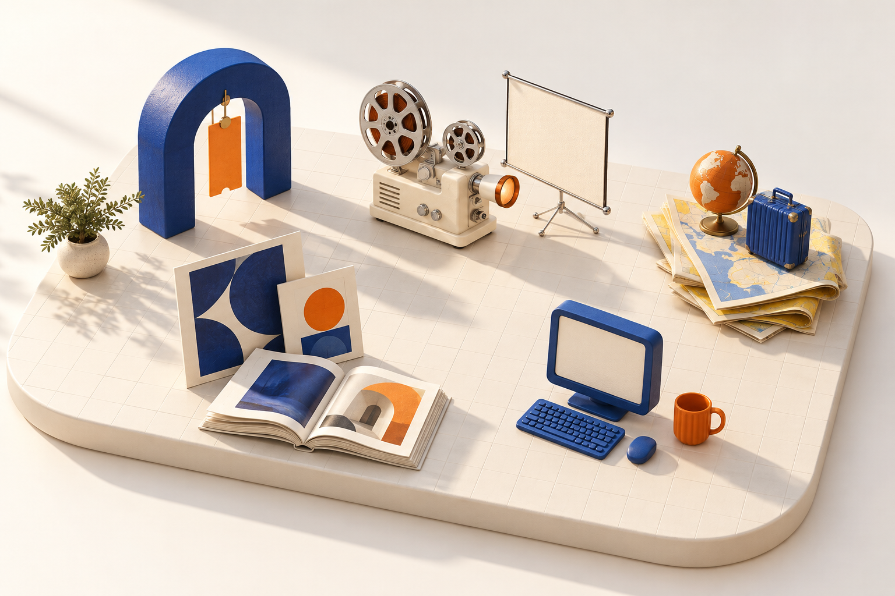
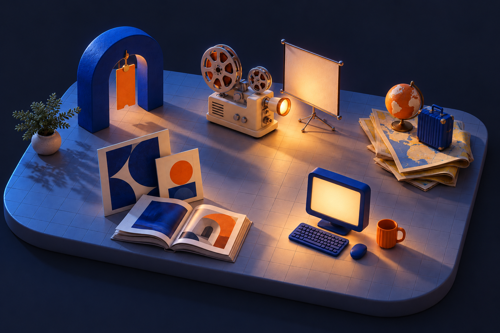
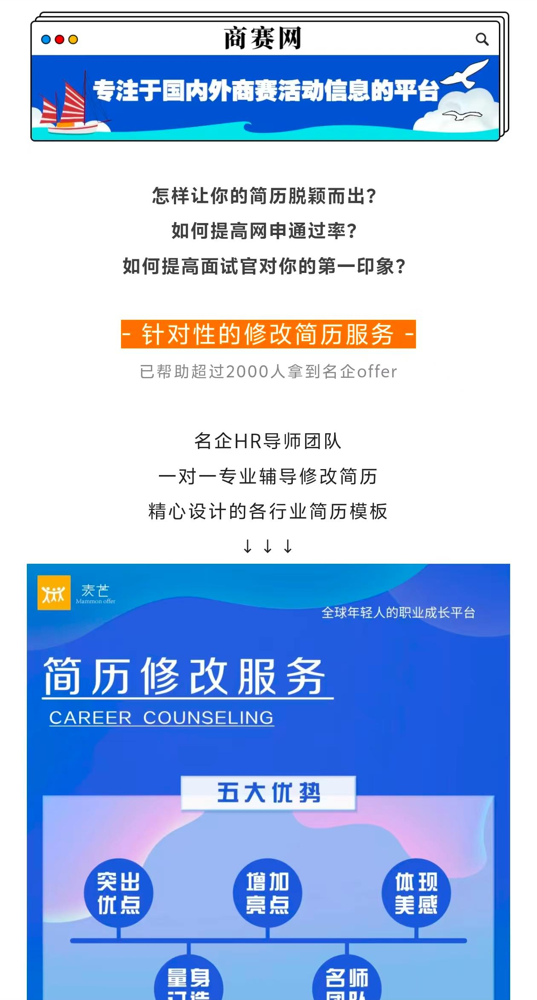
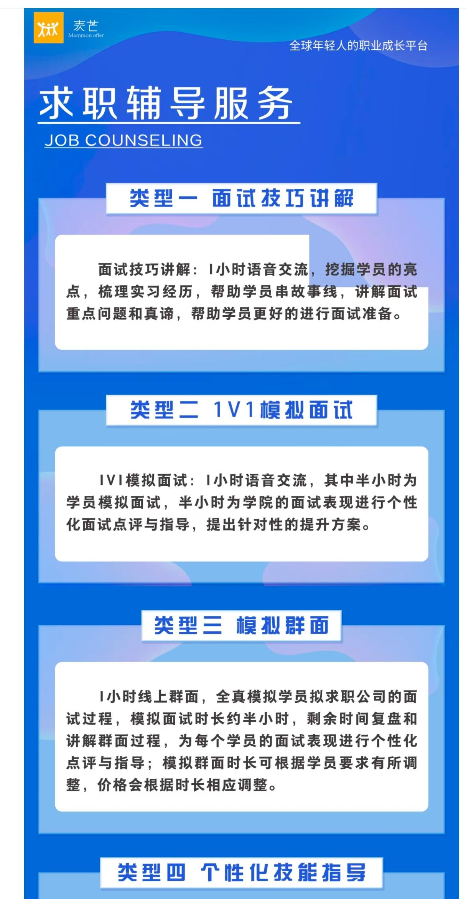
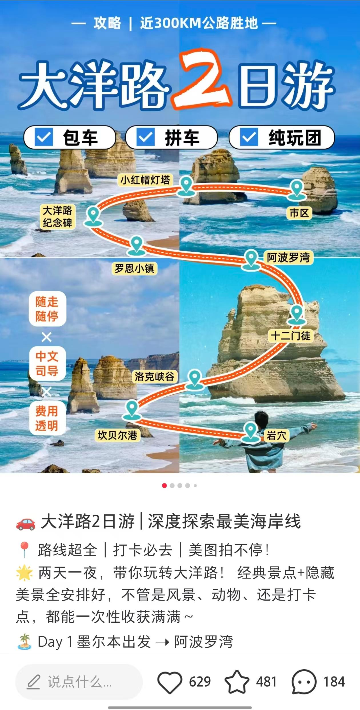
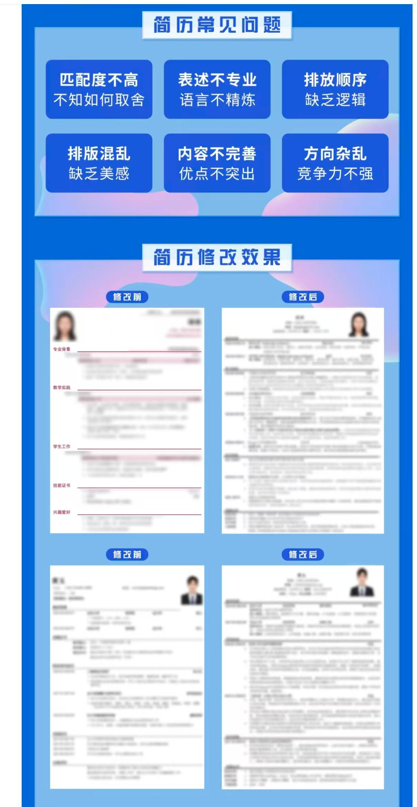

把重复工作留给工具，
把判断留给自己。
已实践：ChatGPT / Codex 辅助整理买家画像、线索分层与英文初稿；可灵、即梦辅助生成创意画面。
探索中：AI Agent 工作流。创意工坊CREATIVE PORTFOLIO
海外营销 × 达人合作 × AI 创意内容OVERSEAS MARKETING × CREATOR PARTNERSHIPS × AI CREATIVE
我是粟琳，专注海外营销与内容创作。I’m Su Lin, focused on overseas marketing and content.
用英文内容、达人合作与影像，连接产品和真实的人。I connect products and people through copy, creator partnerships and film.
2,600+ 筛选达人creators researched · 180+ 英文图文English pieces · 7 合作视频collaboration posts · 6 海外平台platforms
点击工作室里的物件，打开我的作品。

从真实合作、买家沟通到视频成片，按项目查看我的工作。Explore creator partnerships, buyer communication and finished films by project.
面向 TikTok Shop 美区，完成达人筛选、英文邀约、寄样跟进和内容交付；案例中可直接观看 7 条真实合作视频。For TikTok Shop US: creator research, English outreach, gifting follow-up and delivery. Watch seven real collaboration posts in the case study.
围绕家居与礼品展，参与六个平台的英文内容、AI 视频、评论私信和海外买家沟通。下面保留工作记录与指标口径。For a home and gifts fair, I worked across six platforms on English content, AI films, comments, DMs and buyer communication. See the work log and measurement notes below.
查看锦汉完整案例与原始证据Explore the JINHAN case and evidence 展会现场与买家沟通 ↗On-site buyer communication ↗
展会现场与买家沟通 ↗On-site buyer communication ↗
锦汉实习期间的个人工作记录。Personal work log from the JINHAN internship.
前两项变化来自本人简历中的锦汉账号运营记录。毛毯视频数据可查看后台截图。
查看指标口径与案例证据 ↗用自然的英文，连接墨尔本的生活方式。English content grounded in Melbourne life.
从本地生活场景出发，组织品牌信息、英文文案和社媒表达。页面保留真实内容截图与文字作品。I shaped brand information and social copy around local everyday scenes. The project includes original screenshots and written work.
查看英文内容与原始截图See the English content and source images 进入 Home Republic 项目 ↗Explore Home Republic ↗
进入 Home Republic 项目 ↗Explore Home Republic ↗
滑动选品、折叠屏开合、海报里的狗碗、蛛丝抓摆件。
点击卡片，直接看这些有趣的产品短片。
创意落在“形态变化”这一瞬间；保留相关文案提示记录、作品画面和最终视频，呈现从构思到成片的工作方式。
精选公众号、小红书与海报作品，展示信息组织、阅读顺序与视觉表达。Selected WeChat, Xiaohongshu and poster work shows how I structure information, guide reading and shape visuals.

01 / 公众号 · 内容编辑WECHAT · EDITORIAL咨询实习网 · 图文策划与排版Consultation WeChat · planning and layout

02 / 视觉版式 · 信息设计VISUAL LAYOUT · INFORMATION DESIGN咨询实习网 · 信息长图与海报版式Consultation WeChat · infographic layout

03 / 小红书 · 内容策划XIAOHONGSHU · CONTENTMOMO 包车旅行 · 路线与体验内容MOMO Charter Travel · route and experience

04 / 公众号 · 信息组织WECHAT · INFORMATION求职内容 · 编辑与版式Career content · editorial layout
内容发生在真实的人与场景里。CONTENT HAPPENS WITH PEOPLE.我喜欢把复杂的信息，变成读者愿意停留的内容。在锦汉展的实践中，我参与产品选题、英文表达、视频创意与买家沟通，也在现场协助客户了解活动。
广西民族大学 · 播音与主持艺术本科
2023.09—2027.06
常用工具与工作流
普通话、配音、英文外宣和团队竞赛，构成我做内容时的另一面。Mandarin, dubbing, English communication and team competitions inform how I make content.
浏览全部奖项与证明 ↗Explore awards and evidence ↗工具服务于具体任务。下面区分我已实践的工作流，以及正在探索的能力。
已实践：ChatGPT / Codex 辅助整理买家画像、线索分层与英文初稿；可灵、即梦辅助生成创意画面。
探索中：AI Agent 工作流。已实践：B2B 英文文案、短视频构思与剪辑；使用剪映和 Canva 完成内容制作。
作品见锦汉文案、AI 放映室与公众号项目。已实践：使用 Excel、VLOOKUP、SUMIF 进行信息整理与分类，结合后台截图审视内容表现。
账号总览与个人产出分别标注口径。已实践：Facebook、Instagram、TikTok、YouTube、LinkedIn 与 Pinterest 的内容策划及买家沟通。
按视觉吸引、行业表达与采购路径调整内容。海外社媒 · 品牌内容 · 中英文文案 · 创意视频
原始作品保留发布时的语言。
↑